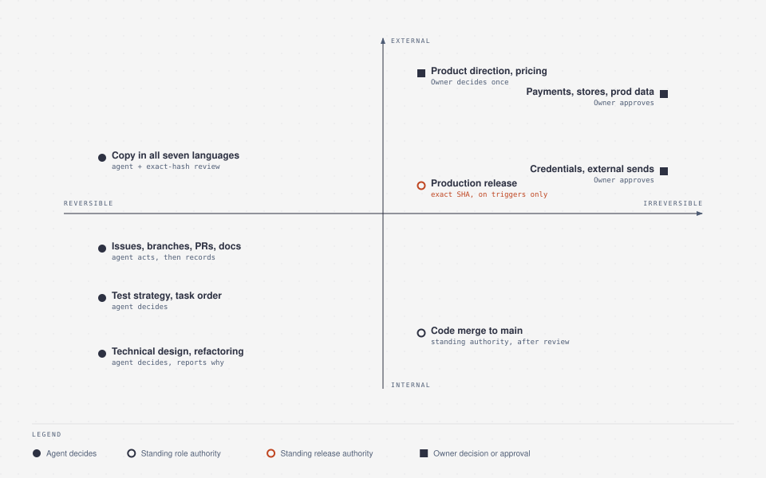
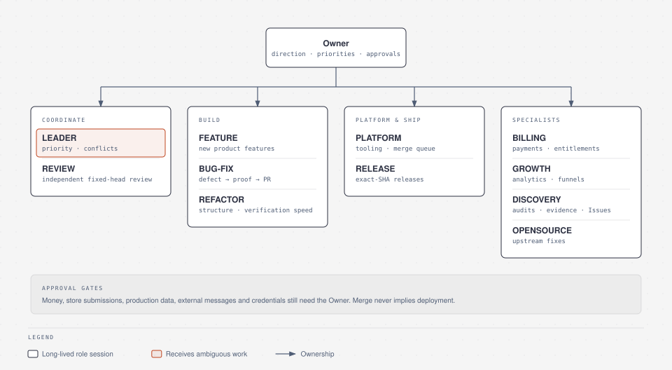
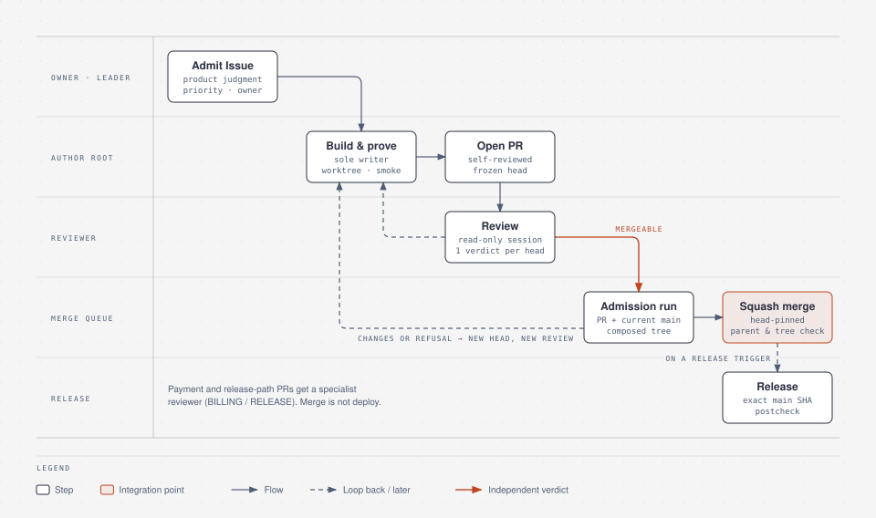
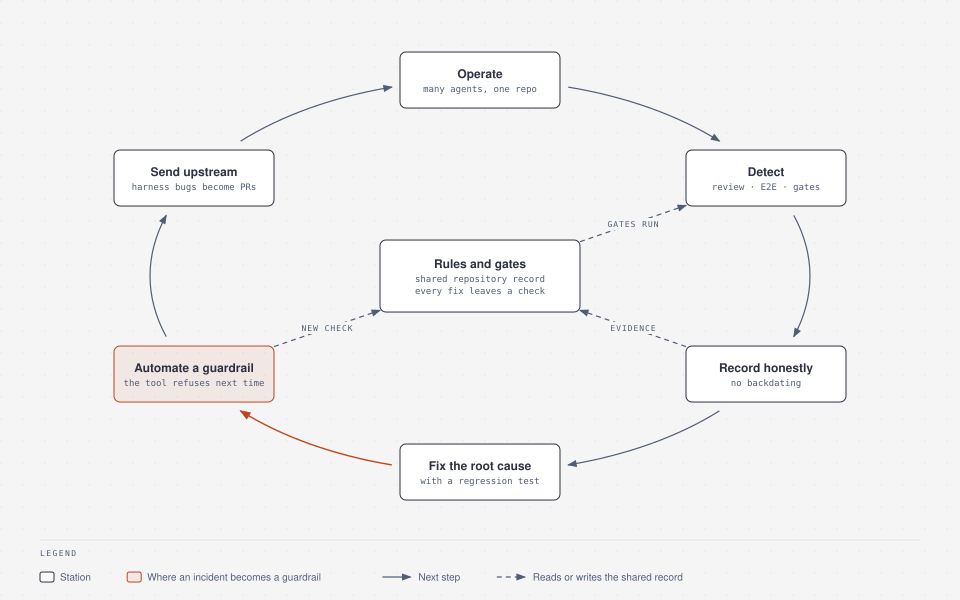

Measurement limits. User, bug-time and review-return figures are approximate historical reports from private operations, not publicly verifiable measurements. Their original counting rules are unavailable; the bug-time endpoints and review-return inclusion rules are not established, so these are not precise benchmarks.
No merged PR titled "Revert" among 249 PRs merged during 2026-09-11 through 2026-10-08 (UTC dates). The count from the private product repository's GitHub search includes all authors and dependency bots: with repository access, search with is:pr is:merged merged:2026-09-11..2026-10-08 via gh api search/issues and read total_count (249); adding in:title Revert returns 0. Only someone with repository access can rerun this count. Dates are inclusive UTC calendar days. This title search does not prove that no changes were reverted or that no regressions occurred.
Supporting activity context, not a success measure: 34–45 PRs merged per day during 2026-10-03 through 2026-10-06 (UTC days; the same all-author GitHub merged-date definition). These historical observations do not measure the effect of the newer workflow.
Independent review changes outcomes
Independent review caught a privacy problem in a chart-calculation-range fix before merge. In a separate October 2026 billing case, a browser agent's test-mode refund E2E showed that refunded reports continued generating; an author added regression coverage and fixed the behavior, a separate reviewer checked it, and the fix reached production. These are distinct examples of the process, not interchangeable evidence.
The billing case predates standing release authority. Its original Owner approvals are history, not today's deployment rule. Requested changes, author repairs and independent delta review—not rubber-stamp approvals—are part of the delivery loop.
1. Owner attention is the scarcest resource
The repository contract makes decision rights explicit. Architecture-level choices are delegated; my involvement is discretionary, not a mandatory gate.
| Decision | Authority |
|---|---|
| Technical design, root-cause scope, refactoring, slicing, test strategy and task order | Agent decides and reports why |
| Tooling recovery, Issues, branches, worktrees, PRs, docs and rule updates | Agent acts within scope, then records |
| Independently reviewed, verified code merge and criteria-based reconciliation | The author prepares the qualified PR; the OPS-owned queue merges. The owning Root reconciles the outcome within the original task scope; narrower limits remain binding |
| Ordinary exact-main-commit production release | OPS releases only on defined triggers, never per merge, under applicable authority, with required readiness, exact-commit evidence and postcheck |
| Money, live payments, stores, external sends, production data/Ops actions, accounts, credentials and boundary-crossing releases | Explicit applicable Owner approval; code merge does not grant it |
| Product direction, pricing, legal/policy facts and scope expansion | Owner decides once; independent authorized work continues |
| Wording in all seven locales, including Korean | AI-managed independent exact-text-hash review; not an Owner copy-review gate |

2. Current ownership and execution
Five continuing ownership roles, not five serial stages, a concurrency target or proof that every session is running.
| Root | Owns |
|---|---|
| LEADER | Product priorities, admission and cross-Root scope/custody conflicts |
| REVIEW | Distinct fixed-head review, findings and evidence assessment |
| ENGINEERING | Product/domain source, defects, maintenance and dependencies within its assigned scope |
| OPS | Platform/infrastructure source, shared tooling, the sole merge queue and authorized exact-commit releases |
| GROWTH | Content/analytics source, acquisition, conversion, retention and support preparation within its assigned scope and effect permissions |

A Root owns the outcome: priorities, scope, shared contracts, writer custody, integration readiness and decision/effect boundaries. Any authoring Root can appoint a worker as the sole branch writer. Workers carry substantial bounded investigation, implementation and proof through to a usable result, not merely research and handoff. The Root remains accountable for integration. Independent read-only review assesses frozen source rather than approving the reviewer's own authoring.
Each repository Issue has one primary worker, one canonical worktree—including retries and review—one source writer and one integration owner. Reuse a suitable idle worker rather than starting duplicate campaigns. Review reads the existing frozen lane; a message, age or silence does not authorize another writer or transfer custody. Workers receive only assignment-specific permissions, not implicit deployment, payment, account or external-effect authority.

Authors own checks, commits, push and PR preparation. The owning Root coordinates integration readiness; the OPS-owned queue alone merges. OPS deploys an exact main commit only under a real release trigger and applicable authority. Authoring, merging, serving a release and observing a useful user outcome are different facts. Diagrams explain these boundaries, not installation or permission evidence.
Durable work, maintained meaning and execution state
| Record | Authority and boundary |
|---|---|
| GitHub Issues / PRs / Project | Durable scope, priorities, ownership, decisions, evidence and remaining outcome criteria |
| Maintained knowledge wiki | Reusable meaning, contracts and operating policy—not a second product backlog |
| Execution state / code controller | Mechanical runtime transitions, leases, process lifecycle and recovery—not another product-priority ledger |
Human/AI judgment selects outcomes and resolves semantic exceptions; code should automate repetitive execution mechanics. Ordinary authorized work does not require a CPU/RAM/disk approval, an ACK receipt or an extra manual audit ritual. Real source ownership, native tool locks, privacy, authorization, failures and explicit stop conditions remain binding; a diagnostic is not a permission token.
Controller design and installation
The code-driven controller boundary is design / work in progress, not proof that a new controller or private adapter is installed or has completed real delivery runs. Source, a passing synthetic example, installation, serving behavior and measured outcomes need different evidence. The implementation direction is a Rust-first core with only necessary SDK bridges, not a claim that every component is already Rust or that a live migration is qualified.
The separate agentic-delivery-kit README, read on 2026-10-24, describes an earlier synthetic dispatcher reference and explicitly says it has no OMP adapter. Its source is useful for studying mechanisms; it is not evidence of private installation, containment or operational results. Substituting an executable name or copying a diagram does not establish integration.
Browser work and messages. Use an owned context for authorized UI checks and read-only operational inspection. Messages coordinate a bounded request, result or exception; they do not create effect authority or an ACK gate. Durable decisions and evidence return to the owning Issue or PR, not another mailbox ledger.
How it evolved — October 2026. Earlier work used the Codex CLI, Claude Code, OMP and jcode. Current coding uses OMP with OpenAI Codex routing; earlier multi-vendor routing is historical, not a definition of independent review. The timer-driven pool and privileged dispatcher were retired. This history and the public reference are not proof that the controller design is installed.
What broke at ~100 concurrent agents, and what we automated
From my local OMP session logs, five-minute samples of first-event-to-last-write intervals give approximately 1,450 OMP coding-agent sessions and 3,430 sub-agent runs since 2026-09-23, a peak of ~116 concurrent OMP coding agents (October 14, 22:29 UTC) and a seven-day average of ~54 in the 2026-10-18 snapshot. These figures cover OMP coding-agent sessions only, excluding the Aside browser agent. Overlapping intervals do not establish active execution.

GIT_* environment and flipped core.bare in the shared repository. Fixed with isolated Git environments; the same bug class is proposed upstream in Flutter #194429, open as of 2026-10-18.Private-operation accounts, not independently rerunnable public incident records. No private PRs, internal identifiers or infrastructure layout are published. Preventive guardrails and pre-merge reproductions are not measured reductions in incident rate.
Dated activity, not an outcome metric: 776 repository-wide merged PRs in an approximately seven-day observed window, queried on 2026-10-18 at 09:52 UTC with is:pr is:merged merged:>=2026-10-11T10:00:00Z. The exact start and query time define this snapshot; it is not a complete seven-calendar-day rate. Secondary context: 1,051 merged PRs across September 19–October 18, 30 inclusive UTC calendar dates with October 18 partial, using merged:2026-09-19..2026-10-18. Both searches include all authors and bots and the private repository qualifier, omitted here; the recorded GitHub responses had incomplete_results: false. These dated private-operation snapshots are not independently rerunnable from this public page. Activity counts do not measure individual productivity, delivery quality or product outcomes.
3. Gates that make speed safe
PASS + LLM_CRITIQUED. Sensitive copy also needs domain review; pricing, legal and policy facts retain their owners.4. Context tools are leads, not evidence
Confirm callers and impact in source, rather than trusting an index.
5. Same principles, client context
On an existing client codebase, bounded authoring and independent review turned a manual workflow into working server-backed, role-based interfaces.
6. Upstream fixes found by dogfooding
Running many concurrent agent sessions on one machine stresses the harness itself. Harness defects get the same treatment as product defects: reproduce, isolate, fix with a regression, send upstream.
Except for the explicit #15504 merge-state check on 2026-10-24, the upstream statuses below are the 2026-10-18 snapshot, not a fresh status check for this operating-model update.
read line < <(cmd) could hang because the read blocked the runtime worker before the producer ran; the same hang stalled a live agent shell command on 2026-10-14. The maintainer's #15509 landed the read deadlock fix and its single-worker regression, graciously crediting my original patch. My #15504, the regular-file fast path, merged on 2026-10-15 at 12:37:09 UTC (primary state checked 2026-10-24). This authored-PR merge is separate from the overlapping deadlock fix credited through maintainer #15509. The mapfile/readarray fix #15647 remains open, with a single-worker regression that timed out before the fix and passes after it..env (#15476) and per-worktree build-cache clones exhausting disk (#15475). In jcode, contiguous TUI typing became one undo step (#1714) and CI formatting was restored (#1739).Historical report dated 2026-10-18, not revalidated: 7 merged (five oh-my-pi, two jcode), 5 open and 3 closed without merge among my PRs across oh-my-pi, jcode, Flutter, OpenTelemetry Rust and ts-rs. Query: author:mg-mg-mg is:pr is:public -user:mg-mg-mg -org:TriAstra-ai, filtered to those five repositories. Reported open PRs: oh-my-pi #15647 and #15478, Flutter #194429, OpenTelemetry Rust #3791 and ts-rs #501. The original per-PR counting list is not reproduced here; this update neither revalidates nor recalculates that aggregate from a single PR's merge-state check. The maintainer's #15509 is not counted as my merged PR. Contribution index.
Publication hygiene
Before publishing, stage the intended files and run bash scripts/check-publication.sh origin/main (Git and Python 3 only). The pinned pull-request workflow checks staged text, incoming commit trees and messages, and requires GitHub noreply author and committer identities. It rejects non-noreply email addresses and common credential patterns in text. This limited guard does not inspect binary media, detect every secret or remove existing history; public text and images still require human review. Existing history is intentionally unchanged.